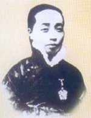
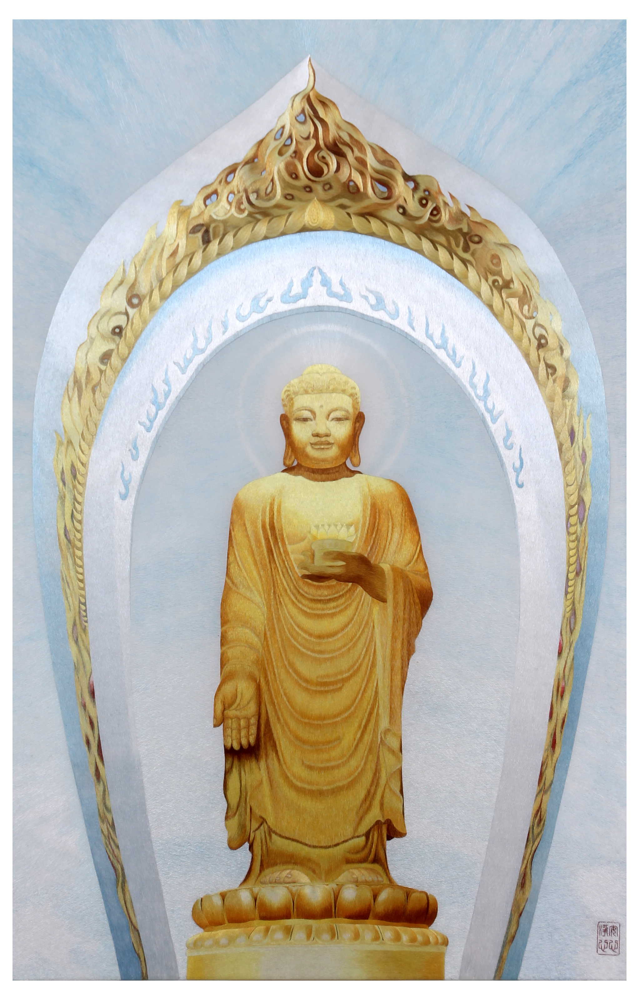
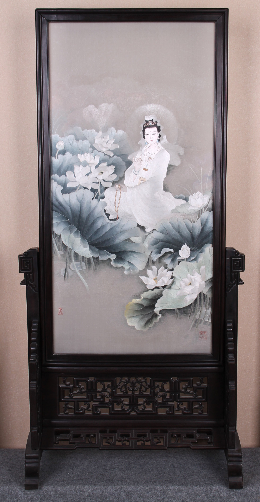
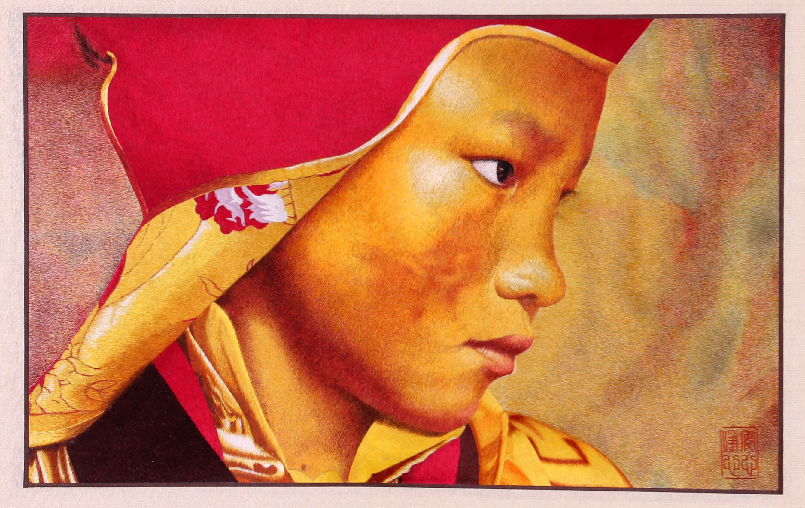
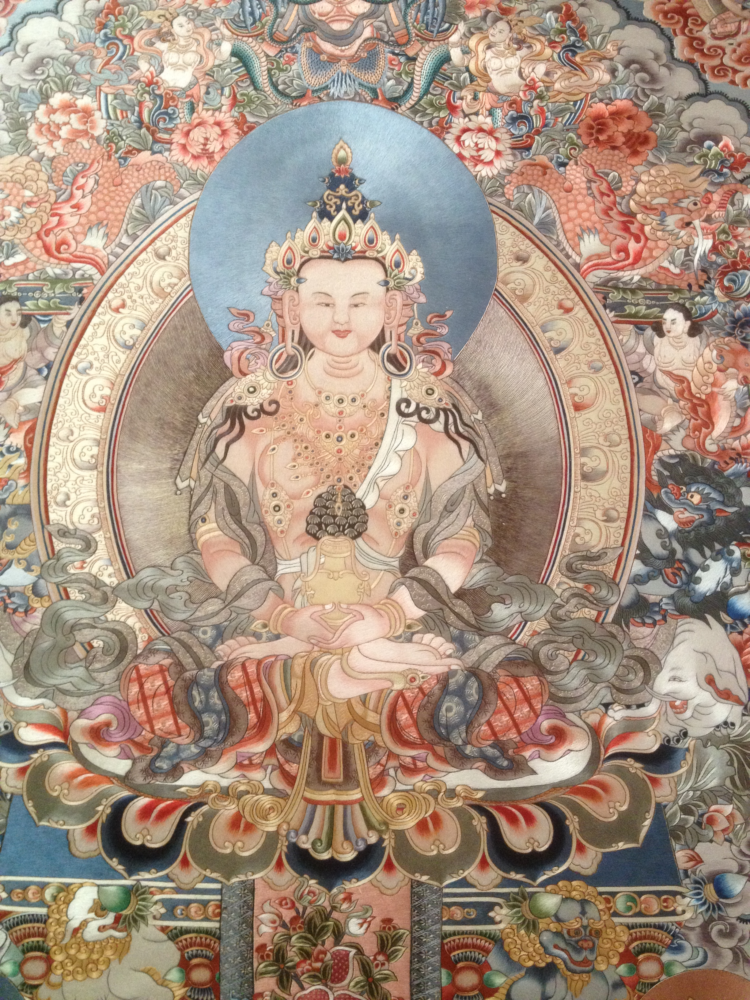
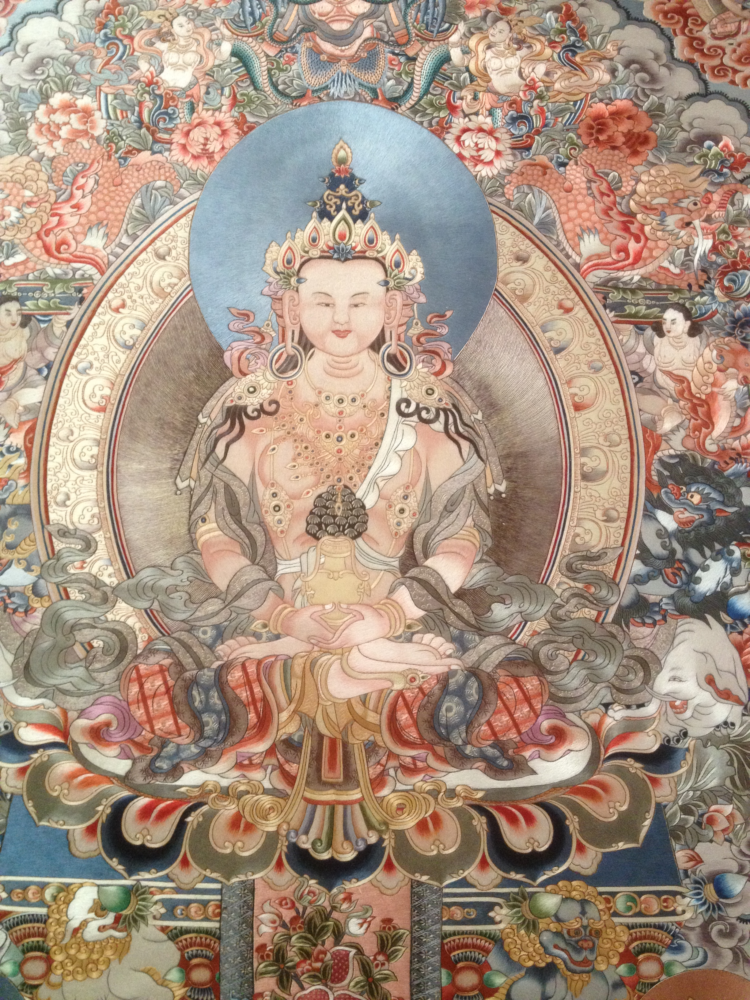
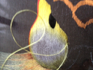
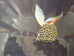
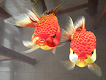

苏绣文化
苏绣文化我爱苏绣是由北京东方释码生物科技有限公司创办,我爱苏绣致力于传播中国苏绣文化，集苏绣培训、作品定制、作品创作为一体。
苏绣是以江苏苏州为中心的刺绣产品的总称。苏州刺绣至今已有2000余年的历史，早在三国时期(公元220～280年)就有了关于苏绣制作的记载。此后经过历代的不断发展完善，到明代(1368～1644年)时，苏绣已成为苏州地区一项普遍的群众性副业产品，形成了"家家养蚕，户户刺绣"的局面。清代(公元1644～1911年)的苏绣以"精细雅洁"而闻名，当时的苏州更有了"绣市"的誉称。清代中后期，苏绣在绣制技术上有了进一步发展，新出现了精美的"双面绣"，仅苏州一地专门经营刺绣的商家就有65家之多。民国时期(公元1912～1949年)，由于常年战乱，苏绣业曾一度衰落。新中国成立后，苏绣得到进一步的恢复和发展。1950年后，国家专门设立了苏绣研究所，并开办刺绣训练班。苏绣的针法由原来的18种发展到今天的40余种。 苏绣具有图案秀丽、构思巧妙、绣工细致、针法活泼、色彩清雅的独特风格，地方特色浓郁。绣技具有"平、齐、细、密、和、光、顺、匀"的特点。"平"指绣面平展;"齐"指图案边缘齐整;"细"指用针细巧，绣线精细;"密"指线条排列紧凑，不露针迹;"和"指设色适宜;"光"指光彩夺目，色泽鲜明;"顺"指丝理圆转自如;"匀"指线条精细均匀，疏密一致。在种类上，苏绣作品主要可分为零剪、戏衣、挂屏三大类，装饰性与实用性兼备。其中以"双面绣"作品最为精美。
苏绣的历史长达2000多年。苏绣自古便以精细素雅著称于世，其构图简练，主题突出，技巧精湛。仅以苏绣所用最细的线以为一般人的肉眼所能看清楚为例，足见其精细之极。湘绣是在吸收苏绣和其它刺绣的优长处发展而来的。湘绣使用不同颜色的线相互掺和，逐渐变化，色彩丰富饱满，色调和谐。湘绣的图案借鉴了中国画的长处，所绣内容多为山水、人物、走兽等，尤其是湘绣的狮、虎题材，形象逼真，栩栩如生。 粤绣构图饱满，繁而不乱，装饰性强，色彩浓郁鲜艳，绣制平整光滑......。粤绣的题材广泛，多为百鸟朝阳、龙凤等图案。
沈寿，是我国第一位刺绣艺术大坪。她创立的仿真绣，成为我国现代刺绣艺术的先河。特别是苏绣的发展，开中刺绣艺术一代新风，做了里程碑式的贡献，在国际上为祖国赢得极高的声誉
“仿真绣”的创始人
创始于本世纪20年代的乱针绣，其创始人为杨守玉教授。由于她擅长刺绣的针法技巧，又娴熟西洋绘画，因此决心“越传统针法之规”，创造出了最新的刺绣艺术——乱针绣。
.png)
乱针绣完美结合中国刺绣与西方油画的理论与技术，显示出刺绣的三维效果、作品的空间立体感和变化的色彩。乱针绣作品题材广泛，尤其适用于人物，风景和动物等题材，对于世界名画是一个再创造，更显得惟妙惟肖。一些优秀的乱针绣作品则被海内外众多著名人士所收藏，也多次作为国礼，在国家领导人出访时赠于外国首脑。乱针绣确是绣苑中的珍品，极具收藏价值。
杨守玉一生致力于绘画，刺绣艺术教育工作，追求艺术的至善至美。她能画善绣，能诗能章，篆刻书法无不精通，具有扎实的文学修养和深厚的艺术功底。由于她在刺绣艺术理论上有其独到的见解，在绘画艺术与刺绣技法相合的探索实践中取得突出成就，于本世纪二十年代发明成功震惊绣坛的乱针绣。乱针绣以一种全新的艺术手法，打破了传统刺绣“密接其针，排比其线”的框架。在针法中融合笔法，以针代笔，以线代色，运用长短交叉的线条，分层加色，渗色等手法，使绣者之手不受眼的约束，直接听从脑的指挥，将心灵之感触融于绣中，极大地丰富了绣品的深度，广度与质感，开创了中国传统刺绣艺术的新天地。
杨守玉创始的乱针绣作品闻世后，在国内外的多次展示中，引起美术界的很大反响，深为杨守玉大胆创新的气魄而赞叹与敬佩，并得到有关方面的多次嘉奖。但她为人正直、舍己为人、不计名利，大部分绣品都无偿贡献给学校，捐助办学。她将自己毕生从艺心得，无私地传授学生，亲手培养和造就了一大批优秀刺绣艺术人才。如今在她的学生中，许多都已成为享誉海内外的艺术大师。杨守玉终生未嫁，将自己毕生精力全部奉献给了她所热爱的艺术事业。恩师高尚的品德，是后人们永远难忘的纪念。
自幼喜爱绘画，服装设计。机缘巧合，偶遇中国第一刺绣艺术大师沈寿故居，从此被中国古老的刺绣针法艺术深深吸引，至今潜心钻研先师沈寿、乱针绣之父杨守玉先生有关刺绣见解的历史作品及相关资料，反复推敲、试验、钻研各种针法的精髓，经过多年的刻苦努力，终于形成自己独特的刺绣艺术风格：以针代笔，以线代墨，将有形的针线完全融于绘画之中，尤其擅长用传统的中国刺绣技法以中国传统的水墨画形式表现出来，将有形的针法完全融于笔法和墨法之中，无针迹线迹可循。
作品的定制可以根据客户的需求来决定，我们制作的都是精品。可以定做的有自己的绘画图像、各种图案的双面绣、围巾、包、旗袍及其他。根据客户的需求来定制自己的唯一，一下为沈净心老师精心作品大家可以观赏一下。
   

-
兴趣班 简单绣样基本针法1-3次的练习，免费提供一副手拿相框式绣样制作。学费650元
-  初级班 s绘画知识与基本针法理论相结合教学，提供初级绣样加深实践练习，独立完成基础作品一副，并免费装裱。学时：30次。
-  中级班 结合素描、色彩等相关知识与刺绣多种针法的运用，进行实践教。提供中级绣样两副加深实践练习，独立完成绣样作品，并免费装裱。学时：90次。
-  高级班 理论与实践各类针法的深入练习(平针系列平针、套针、散针、接针、滚针、齐针、施针相互运用，以及平针系列与乱针绣针法的相互融合等)。提供高级班绣样